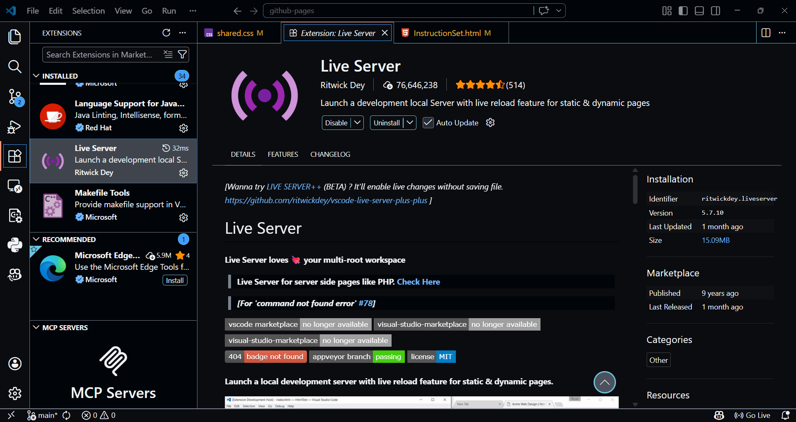

<!doctype html>
<html lang="en"></html>
  <head>
    <meta charset="UTF-8" />
    <title>Instruction Set — Timothy Kozuch</title>
    <link rel="stylesheet" href="../shared.css" />
  </head>
  <body>
    <div class="container">
      <a href="../index.html" class="back-link">← Back to Home</a>

      <div class="page-header">
        <h1>How to Build a Webpage</h1>
        <p style="color: #cdddf8">
          An instruction set for creating your first web page with HTML and CSS.
        </p>
      </div>

      <section id="intro">
        <h2>Introduction</h2>
        <p>
          This instruction set guides novice users through learning how HTML and CSS can be used to create a webpage. HTML(hypertext markup language) and CSS (Cascading Style Sheet) are the foundation of any webpage that you see across the internet. 
        </p>
        <ul style="margin-top: 1rem; color: #cdddf8">
          <li><strong>Total Time:</strong> __ minutes</li>
          <li>
            <strong>Skills Required:</strong> Basic computer literacy and ability to manage files in the file exploror. 
          </li>
          <li>
            <strong>Required Materials: </strong> 
            <p>1: A modern web browser like chrome</p>
            <p>
              2: A code editor like VS Code (you can download it <a href="https://code.visualstudio.com/" class="link">here</a> and if you need additional help there are guides on youtube like <a href="https://www.youtube.com/watch?v=1W0hL6_uX9A" class="link">this</a>) 
            </p>
          </li>
        </ul>
      </section>


      <section class="step-section" id="step1">
        <h2>Step 1: Environment Setup</h2>
        <section class="step-container">
          <div class="step-text">
            <p>
              A: Create a new folder on your Desktop named FirstWebPage. 
              You can do this by right clicking on your desktop (not an application on the desktop) and selecting <em>new > Folder</em>.You can then type "FirstWebPage" to name it and then press enter to finish creating it. 
            </p>
          </div>
          <div class="step-visual">

          </div>
        </section>
        

        <section class="step-container">
          <div class="step-text">
            <p> B: Open VS Code and select <em>File > Open Folder</em> to open the directory. Navigate to the folder you created on the desktop and open it.
            </p>
          </div>
          <div class="step-visual">
            
          </div>
        </section>
        
        <section class="step-container">
          <div class="step-text">
            <p> C: Go to extensions on the left hand side of the screen, it looks like four boxes, and search and instal "Live Server" by Ritwick Dey. After you instal it you can see what your page looks like by clicking go live at the bottom right of VS code. 
            </p>
          </div>
          <div class="step-visual">
            
          </div>
        </section>

        <section class="step-container">
          <div class="step-text">
            <p>
              D: Click on <em>File > New File</em> at the top left corner of VS code to create two files and name them "index.html" and "style.css".
            </p>
          </div>
          <div class="step-visual">
            
          </div>
        </section>
        
      </section>
      <h2>Info about HTML</h2>
      <p>
        HTML is the basic building blocks of a webpage and makes up the structure 
      </p>
      <section class="step-container" id="step2">
        <div class="step-text">
          <h2>Step 2: Construct the HTML Skeleton & Elements</h2>
          <p>Open <code>index.html</code> and build your page structure using these essential tags:</p>

          <h3>A: The Skeleton</h3>
          <ul>
            <li><strong>&lt;!DOCTYPE html&gt;</strong>: The Document Type Declaration tells the browser you're using HTML5 so it can properly display it.</li>
            <li><strong>&lt;html&gt;</strong>: The Root Element that wraps the entire document.</li>
            <li><strong>&lt;head&gt;</strong>: The Metadata Container for info that doesn't show up on the page (like links to CSS).</li>
            <li><strong>&lt;body&gt;</strong>: The Content Area where everything you see (text, images, buttons) lives.</li>
          </ul>

          <h3>B: The Brains (Head)</h3>
          <ul>
            <li><strong>&lt;meta charset="UTF-8"&gt;</strong>: Ensures special characters and symbols display correctly.</li>
            <li><strong>&lt;title&gt;</strong>: The Tab Name seen in the browser or search results.</li>
            <li><strong>&lt;link rel="stylesheet" href="style.css"&gt;</strong>: The "Paint" bridge that connects your HTML to your CSS file.</li>
          </ul>

          <h3>C: The Content (Body)</h3>
          <ul>
            <li><strong>Headings (&lt;h1&gt;)</strong>: Used to show different sections of content and can have sub heading using h2,h3,etc..</li>
            <li><strong>&lt;p&gt;</strong>: Standard paragraphs for text.</li>
            <li><strong>&lt;strong&gt; & &lt;em&gt;</strong>: Formatting for **bold** and *italics*.</li>
            <li><strong>&lt;a&gt; (Anchor)</strong>: Creates links. You must use the <code>href</code> attribute to tell it where to go.</li>
            <li><strong>&lt;img&gt;</strong>: Displays pictures using the <code>src</code> attribute. This is a "self-closing" tag.</li>
            <li><strong>&lt;button&gt;</strong>: Creates a clickable button.</li>
          </ul>

          <h3>The Boxes</h3>
          <ul>
            <li><strong>&lt;div&gt;</strong>: A generic container used to group elements together.</li>
            <li><strong>&lt;section&gt;, &lt;article&gt;, &lt;nav&gt;</strong>: Similar to divs, but they tell the browser exactly what the content is (e.g., a menu or a post).</li>
          </ul>
        </div>

        <div class="step-visual">
          <pre>
&lt;!DOCTYPE html&gt;
&lt;html lang="en"&gt;
&lt;head&gt;
    &lt;meta charset="UTF-8"&gt;
    &lt;meta name="viewport" content="width=device-width, initial-scale=1.0"&gt;
    &lt;title&gt;My First Page&lt;/title&gt;
    &lt;link rel="stylesheet" href="style.css"&gt;
&lt;/head&gt;
&lt;body&gt;
    &lt;nav&gt;
        &lt;a href="index.html"&gt;Home&lt;/a&gt;
    &lt;/nav&gt;

    &lt;section&gt;
        &lt;h1&gt;Hello World&lt;/h1&gt;
        &lt;p&gt;This is a &lt;strong&gt;bold&lt;/strong&gt; start!&lt;/p&gt;
        &lt;img src="image.jpg" alt="A nice view"&gt;
        &lt;button&gt;Click Me&lt;/button&gt;
    &lt;/section&gt;
&lt;/body&gt;
&lt;/html&gt;</pre>
        </div>
      </section>


      <section class="step-container">
        <div class="step-text">
          <h3>Step 3: Define Visual Styles</h3>
          <p>
            Navigate to <code>style.css</code> and apply these rules to set the
            background color and typography:
          </p>
        </div>

        <div class="step-visual">
          <pre>
body {
  background-color: #111;
  color: #ccc;
  font-family: sans-serif;
}
h1 {
  color: #57c8ff;
}         </pre>
      
        </div>
      </section>

      <section id="troubleshooting">
        <h3>Troubleshooting</h3>
        <p>
          If the page is blank, verify you saved the files. If colors aren't
          changing, ensure the <code>href</code> in your HTML matches your CSS
          filename exactly.
        </p>
      </section>

      <section id="glossary">
        <p>
          <strong>HTML:</strong> Standard language for web content structure.<br />
          <strong>CSS:</strong> Language used for visual layout, colors, and
          fonts.
        </p>
      </section>
    </div>
  </body>
</html>
